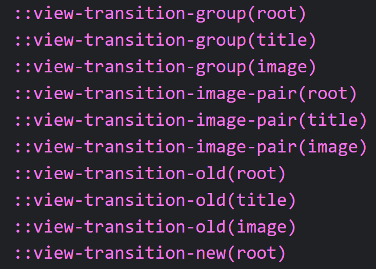

If you open up your DevTools F12 or CTRL + SHIFT + I
> or whatever it is on MacOS
and navigate to another page.
You will see a bunch of pseudoelements like this:
If the HTML has the meta tag view-transition, these are the elements that are being animated with CSS-like animations
> you can even customize them!
and are created by the browser and are not part of the DOM.
They are basically a screenshot of the element that they represent.
> the one that's tagged with the style view-transition-name
So, when you navigate to another page, the browser takes a screenshot of the element
and animates it to the new position.